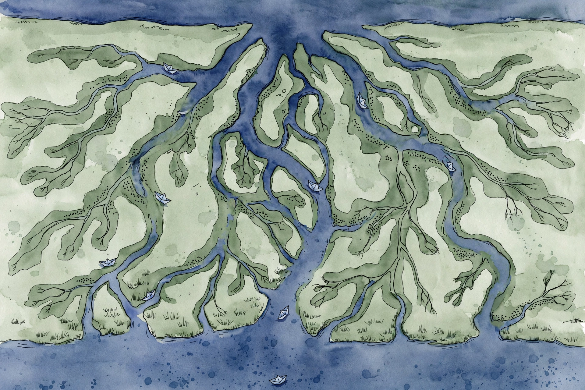
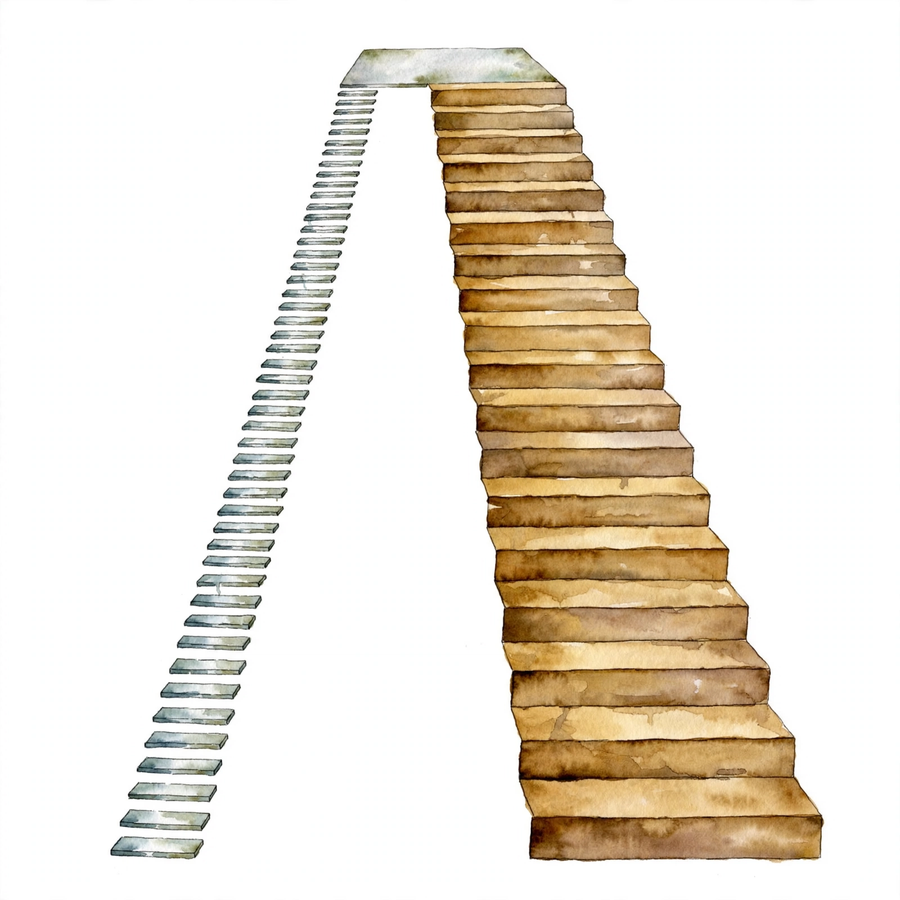

Unit 08 · DDIM, guidance, and the serving arithmetic
Ten steps instead of one hundred, a knob between solving and sampling, a budget sheet for the loss, and the FLOP count that sets the serving price.
From the lesson The idea, and every number beside it, comes from the cited section of content/v2/math-genai/lessons/u08/lesson-08-diffusion-variants-implementation.md. The phrasing is the companion's. No lecture transcript exists for this unit.
Illustration Invented by the companion: an analogy, a toy with made-up values, or a what-if. Never lecture content.
companion The idea above the tag carries a lesson anchor. The generalization below it is the companion's own voice.
Narrated from the lesson content. The lesson is locally authored bridge material. It states that it does not reproduce the instructor lectures, and no transcript was inspected. All numbers below were computed in the lesson on 2026-10-06 (numpy 1.26.4, float64, seed 0 where RNG is used, compute_run5b.py reproduces every one). Natural log inside the Gaussian algebra. Log base 2 in bits for likelihood statements.


The running toy continues from U07: scalar x, T = 100, linear betas 1e-4 to 0.02, x_0 = 2.0, drawn noise eps = 0.5, constant network prediction eps_hat = 0.4. From the lesson C01-C12 The DDIM subsequence is tau = [10, 20, ..., 100] (10 steps). A new toy U-Net (1x8x8 input) enters for the implementation sections. The arc: fewer steps with the same marginals (C01-C03), the network that knows what time it is (C04-C05), steering the reverse process (C06-C09), and shipping it: cost and correctness (C10-C12).
The DDPM forward process is Markov: x_t depends on x_{t-1}. From the lesson C01 The DDIM construction drops the Markov requirement and keeps only the marginals: q(x_t | x_0) = N(sqrt(ab_t) x_0, (1 − ab_t) I), exactly as in DDPM. Any joint process with those marginals trains the same epsilon network, because the training loss only ever sees (x_0, x_t, t) triples drawn from the marginals. The marginals are the contract between training and sampling. The Markov chain was one implementation of the contract. DDIM is another, designed so that big jumps stay exact.
The DDIM reverse step: x_{t-1} = sqrt(ab_{t-1}) x0_hat + sqrt(1 − ab_{t-1} − sigma²) eps_hat + sigma z. From the lesson C01 Sigma_t(eta) = eta × sqrt((1 − ab_{t-1})/(1 − ab_t)) × sqrt(1 − ab_t/ab_{t-1}). For the 100 → 90 jump: sigma(eta = 1) = 0.39249806, sigma² = 0.15405473. This is the variance of the 10-step jump, not the single-step beta_tilde_100 = 0.01976684. The subsequence changes which variance eta = 1 recovers. The marginal identity: 0.15405473 + 0.40507252 = 0.55912725 = 1 − ab_90. The marginals hold for every eta. Deterministic jump: x_100 = 1.60480905, x0_hat = 2.13230847, x_90 = sqrt(0.440873) × 2.13230847 + sqrt(0.559127) × 0.4 = 1.71491474.
Bench. Turn the eta knob. Illustration Lesson rule for the 100 → 90 jump: sigma = eta × 0.39249806. Lesson values: ab_100 = 0.36356325, ab_90 = 0.440873.
sigma = 0.00000 · sigma² = 0.00000
The failure case: eta > 1. From the lesson C01 Sigma exceeds the marginal budget, 1 − ab_{t-1} − sigma² turns negative, the square root fails. The C12 battery asserts sigma below sqrt(1 − ab_{t-1}) for eta in [0, 1].
The only randomness in the DDIM reverse step is sigma z. From the lesson C02 Set eta = 0: sigma = 0, the z term vanishes, and the whole trajectory from x_T to x_0 is a deterministic function of x_T and the network. The initial x_T is still random: different seeds draw different x_T and give different samples. Deterministic means reproducible given x_T, not constant. The lesson mental model: eta = 0 turns the sampler into an ODE solver, eta = 1 keeps it an SDE sampler. The knob interpolates between solving and sampling.
Fixed x_T, eta = 0, seeds 0 vs 1: max trajectory difference below 1e-12, bit-identical. From the lesson C02 At eta = 1: above 1e-6, genuinely different. Deterministic endpoint from the fixed x_T: x_0 = 2.408479 (mid-trajectory 1.890616, 2.219587, 2.408479 at taus 80, 50, 20 read backward). The endpoint overshoots 2.0 because the constant net (eps_hat = 0.4 vs true 0.5) errs on every step and the deterministic path accumulates the bias. Stochasticity can mask a biased net. Determinism exposes it. Debug rule: test a new net at eta = 0 first.
Uniform tau = [10, 20, ..., 100] spends evals evenly. From the lesson C03 But the signal changes fastest where alpha_bar moves fastest: on this schedule ab drops 0.989998 → 0.960553 in the first jump and only 0.440873 → 0.363563 in the last. The subsequence alpha_bars: 0.989998, 0.960553, 0.913363, 0.851104, 0.777180, 0.695412, 0.609714, 0.523788, 0.440873, 0.363563. A late-dense schedule [1, 20, 39, 55, 69, 80, 88, 95, 98, 100] takes three jumps in the last 10 percent of the chain (95 → 98 → 100) where the uniform schedule takes one. The lesson mental model: evals are a budget. Spend them where alpha_bar has the steepest slope, the same way quadrature puts points where the integrand varies.
Eval counts: DDPM 100, DDIM-10 10, a 10x reduction either way. From the lesson C03 The failure case: tau with a repeated value. ab_t = ab_{t-1} makes sigma divide by zero and the jump a no-op that still costs an eval. Assert strict increase.
The net eps_theta(x_t, t) takes a noisy image plus a timestep and returns the predicted noise, same shape as the input. From the lesson C04 The toy U-Net on 1x8x8 input: d1 conv 1→8 gives 80 params, d2 conv 8→16 gives 1168, bottleneck conv 16→16 gives 2320, u1 conv 32→8 gives 2312 (the skip concat doubles the channels: 16 + 16 = 32), u2 conv 16→1 gives 145. Total 6025. The lesson mental model: the encoder asks what the global structure is, the bottleneck holds the compressed answer, the decoder asks where exactly, and the skips hand the decoder the fine detail the bottleneck dropped.
FLOPs per conv = 2 × C_in × C_out × k² × H × W: 9216 + 36864 + 18432 + 73728 + 18432 = 156672 per forward. From the lesson C04 DDPM-100 sampling: 15.6672 MFLOP. DDIM-10: 1.56672 MFLOP. The failure case: forgetting the skip concat channel doubling. u1 built as 16→8 instead of 32→8 gives 1160 params and the forward fails at runtime with a channel mismatch. Count channels before building.
Convs take tensors, not integers. From the lesson C05 The sinusoidal embedding maps t to a vector: PE(t, 2i) = sin(t / 10000^{2i/d}), PE(t, 2i+1) = cos(t / 10000^{2i/d}). Low indices vary fast with t (fine time resolution), high indices vary slowly (coarse). The lesson mental model: a clock face with many hands. Fast hands tell nearby timesteps apart, slow hands give the rough position in the chain.
Toy d = 8, emb(50) = [−0.262375, 0.964966, −0.958924, 0.283662, 0.479426, 0.877583, 0.049979, 0.99875]. From the lesson C05 emb(0) = [0, 1, 0, 1, 0, 1, 0, 1]: at t = 0 all sines are 0, all cosines 1. Nearby t agree: cos(emb49, emb50) = 0.8838. Distant t differ: cos(emb10, emb90) = 0.3594. A time-blind net (no embedding) predicts the same eps_hat at t = 10 and t = 90, which is wrong at one of them.
Each middle ELBO term is a weighted squared error: w(t) ||eps − eps_hat||² with w(t) = beta_t / (2 ab_t (1 − ab_t)) under the sigma_t² = beta_t choice. From the lesson C06 The simplified DDPM loss drops w(t) and uses weight 1 at every t. The lesson mental model: w(t) is a budget sheet. It says which timesteps the bound cares about. Uniform weight rewrites the sheet to every timestep equal. The net obeys the sheet it is given.
On the toy: w(1) = 0.50005, w(50) = 0.02873, w(100) = 0.04322. From the lesson C06 Normalized by w(50): 17.41, 1.00, 1.50. Max over min: 17.74. The ELBO cares 17x more about t = 1 than t = 50 on this schedule. The simplified loss treats them equally. This curve is the item the U07 lesson left stated-not-plotted. The failure case: weighting by 1/ab_t without the (1 − ab_t) factor. It blows up at t = T where ab_t is small, and training diverges on the noisiest steps.
Three views of one object. From the lesson C07 Epsilon: eps_hat, the predicted noise. Mean: x0_hat = (x_t − sqrt(1 − ab_t) eps_hat) / sqrt(ab_t), the implied clean image. Score: s_hat = −eps_hat / sqrt(1 − ab_t), the estimated gradient of log p(x_t). Tweedie's formula connects the mean and the score: x0_hat = (x_t + (1 − ab_t) s_hat) / sqrt(ab_t). The lesson mental model: eps_hat points from the noisy image toward the added noise. Flip its sign and scale it, and it points uphill on the noisy density. Subtract it, and the noise comes off.
At t = 50: s_hat = −0.4 / 0.4720356 = −0.84738932. From the lesson C07 x0_hat via Tweedie: 2.05354466. x0_hat via eps: 2.05354466. Match to 1e-12. The two formulas are the same object, not two approximations. This is the score-based reading of epsilon prediction that U07 forwarded: the DDPM net is a score model in disguise. The failure case: using s_hat at t = 0 in a Langevin corrector. Division by sqrt(1 − ab_0) = 0. Start corrector steps at t ≥ 1.
Add a label y to the net: eps_hat(x_t, t, y). From the lesson C08 During training, pairs (x_0, y) give the supervision. At sampling, fix y and the reverse chain draws from p(x | y). The unconditional net is the special case where y is dropped. The lesson mental model: conditioning splits one denoiser into many, one per class, sharing all weights except the y pathway.
Toy: eps_hat(x, t, y) = eps_hat_uncond + delta_y, delta_0 = −0.05, delta_1 = +0.05. From the lesson C08 At t = 50, x_50 = 1.99917538: y = 1 gives eps_hat = 0.45 and x0_hat = (1.99917538 − 0.4720356 × 0.45) / 0.8815753 = 2.02677249. The label shifts the implied clean image by −0.0268. The failure case: train conditional but sample with y = null and no dropout training. The null path never trained and outputs garbage. Train with conditioning dropout (drop y 10 to 20 percent of the time) so the null path works. This is what classifier-free guidance needs.
Two methods. From the lesson C09 Classifier guidance: train a classifier p(y | x_t) on noisy images, then tilt the reverse step along its gradient: eps_tilde = eps_hat − s sqrt(1 − ab_t) grad_x log p(y | x_t). The score of p(x_t | y) is the score of p(x_t) plus the score of p(y | x_t), and the classifier supplies the second term. Classifier-free guidance: train one net with conditioning dropout, giving eps_c and eps_u. Extrapolate: eps_tilde = eps_u + g (eps_c − eps_u). At g = 1 this is the conditional prediction. g > 1 pushes past it toward stronger conditioning. The lesson mental model: classifier guidance steers with an external critic. CFG steers by exaggerating the difference between the conditional and unconditional predictions, no critic needed.
Toy numbers. From the lesson C09 Classifier guidance: grad = 0.3, s = 1.0, eps_tilde = 0.4 − 1.0 × 0.4720356 × 0.3 = 0.25838859. CFG: eps_u = 0.35, eps_c = 0.45. g = 0: eps_tilde = 0.3500, x0_hat = 2.080317. g = 1: 0.4500, 2.026772. g = 2: 0.5500, 1.973228. g = 3: 0.6500, 1.919683. Each unit of g moves x0_hat by −0.0535. The blend is linear, so large g extrapolates: g = 10 overshoots far past the data. The lesson states the toy's limit openly: at fixed observation noise, 8 draws give std 0.0298 at g = 1 vs 0.0367 at g = 3, so the toy resolves the mean-shift mechanism, not the diversity claim.
Bench. Move the guidance scale. Illustration Lesson rule: eps_tilde = 0.35 + g × 0.10, x0_hat from the t = 50 formula. Lesson values: x_50 = 1.99917538, ab_50 = 0.77718008.
eps_tilde = 0.4500 · x0_hat = 2.02677
Bench. Price the serving cost. Illustration Lesson rule: total = evals × 156672 FLOPs. CFG doubles the evals.
per sample: 15.6672 MFLOP
Toy quality proxy: hit-rate = P(|x0_hat − 2.0| < 0.5) over 500 draws with observation noise 0.15. From the lesson C10 The guidance blend moves the mean: x0_hat(g) = 0.3 + g (2.0 − 0.3). g = 0: mean 0.30, hit-rate 0.000. g = 1: mean 2.00, hit-rate 1.000. g = 2: mean 3.70, hit-rate 0.000. g = 3: mean 5.40, hit-rate 0.000. Seed 2, 500 draws each. The lesson mental model: guidance is a volume knob with a sweet spot. Too low: the condition is ignored. Too high: linear extrapolation overshoots the data. The inverted-U is the mechanism behind the observed quality/diversity tradeoff.
One reverse step costs one network forward plus O(d) algebra. From the lesson C11 The toy U-Net forward costs 156672 FLOPs. DDPM-100: 100 evals = 15.6672 MFLOP per sample. DDIM-10: 10 evals = 1.56672 MFLOP (10x less). DDIM-10 with CFG: 3.13344 MFLOP. The lesson mental model: sampling cost = evals × cost-per-eval. DDIM cuts evals, the U-Net sets cost-per-eval, CFG multiplies by 2. The failure case: counting only the network and forgetting the O(d) algebra per step at huge d. At d = 1M pixels the memory traffic of the algebra matters. Count bytes, not just FLOPs.
Six asserts, each catching one bug class. From the lesson C12 1. Schedule: ab strictly decreasing in (0, 1]. Catches repeated or unordered tau. 2. Sigma bounds: 0 ≤ sigma(eta) ≤ sqrt(1 − ab_{t-1}) for eta in [0, 1]. Catches eta > 1 and negative roots. 3. Determinism: eta = 0, fixed x_T, two seeds give identical trajectories. Catches stray RNG in the deterministic path. 4. Round-trip: eps → x0_hat → eps recovers eps_hat to 1e-12 (toy: 0.40000000000000024). Catches level-indexing bugs. 5. Tweedie = eps formula: the two x0_hat paths agree to 1e-12 (2.05354466 both ways). Catches algebra mistakes. 6. Marginal identity: sigma² + (1 − ab_{t-1} − sigma²) = 1 − ab_{t-1} to 1e-12 (0.55912725 = 0.55912725). Catches wrong sigma formulas.
The battery is a contract test for the sampler. From the lesson C12 The loss cannot catch these: a sampler bug leaves training untouched and corrupts only samples. If assert 4 passes but samples look wrong, the bug is in the net or the schedule, not the sampler algebra. The battery localizes, not solves.
The lesson closes with a ledger. From the lesson Chapter plate Cost without the ideas: 100 evals per sample, a time-blind net, an unread budget sheet, and sampler bugs the loss cannot see. Cost with the ideas: one contract (marginals: the 100 → 90 jump lands at 1.71491474), one knob (eta: 0 for solving, 1 for sampling), one schedule (late-dense spends evals where alpha_bar moves), one clock (embedding: 0.8838 near, 0.3594 far), one sheet (weights 17.41/1.00/1.50 vs uniform 1), one object in three views (−0.84738932, 2.05354466, both paths), one sweet spot (g = 1: hit-rate 1.000), one price tag (1.56672 MFLOP, 3.13344 with CFG), and six asserts. Tradeoff in one line: fewer steps buy serving speed at the cost of discretization error, and guidance buys class adherence at the cost of diversity past the sweet spot. Connection: the score-based reading built here is the bridge U09 walks.
Every lesson on this page, in order. Tap one to return to its chapter.